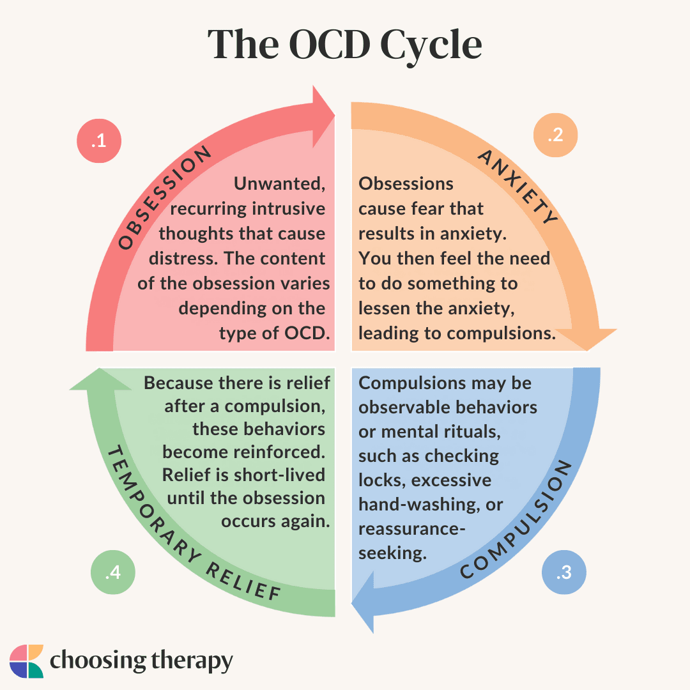

Obsessive-compulsive disorder(OCD)
Obsessive-Compulsive Disorder (OCD) is a chronic psychiatric condition characterized by uncontrollable, recurring thoughts (obsessions) and repetitive behaviors (compulsions) performed to reduce distress. It impacts daily life, often involving excessive cleaning, checking, or ordering. Treatment includes therapy (ERP) and medication (SRIs).
Symptoms
Obsessive-Compulsive Disorder (OCD) involves a cycle of unwanted, intrusive thoughts (obsessions) and repetitive behaviors (compulsions) used to reduce anxiety. Common symptoms include excessive fear of contamination, perfectionism, or harm, leading to time-consuming cleaning, checking, or ordering rituals. Symptoms often cause significant distress and interfere with daily life. Common Obsessions (Intrusive Thoughts) Contamination fears: Germs, bacteria, viruses, or bodily fluids. Harm/Aggression: Fearing you might harm yourself or others, or causing a terrible event by accident. Need for symmetry/order: Extreme discomfort with disorder or asymmetry. Forbidden/Taboo thoughts: Unwanted sexual, religious, or blasphemous thoughts. Doubt: Constant worry about having made a mistake or forgetting to do something, like locking a door. Common Compulsions (Repetitive Behaviors) Cleaning/Washing: Excessive handwashing, showering, or cleaning household items. Checking: Repeatedly checking locks, stoves, or appliances. Ordering/Arranging: Organizing items in a specific, rigid way. Mental Rituals: Silently repeating words, counting, or praying to counteract bad thoughts. Reassurance Seeking: Constantly asking others for assurance that101112 nothing bad happened.s